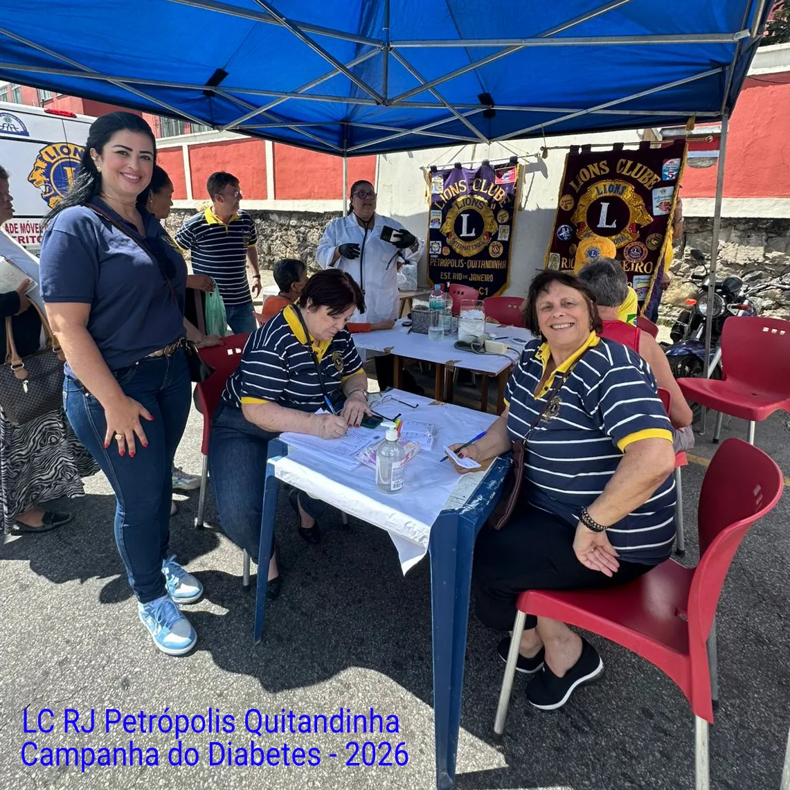

O Lions Clube Petrópolis Quitandinha, egrégia agremiação integrante do Distrito LC-1, consolida-se como um inabalável bastião do serviço desinteressado na região serrana do estado do Rio de Janeiro.
Oficialmente fundado em 25 de maio de 1989, o clube nasceu sob a tutela e o apadrinhamento direto do Lions Clube Petrópolis Centro, uma instituição de vanguarda amplamente reverenciada por sua formidável tradição em irradiar o ideal leonístico e capitanear a estruturação de novas unidades filantrópicas por toda a serra fluminense.
Erigido como representante do histórico e emblemático bairro do Quitandinha e de seus arredores, o clube norteia sua práxis humanitária pelo profundo compromisso com o voluntariado e pela prestação de assistência comunitária contínua às populações em situação de vulnerabilidade.
Em perfeita consonância com os postulados éticos e as prementes causas globais chanceladas por Lions Clubs International, a agremiação canaliza seu valoroso contingente de associados para o fomento de campanhas de amplo impacto.
Suas trincheiras de atuação englobam o letramento sanitário, o amparo social direto e o estímulo inequívoco à cidadania ativa no seio da sociedade petropolitana.
Ademais, a instituição opera em profícua e estreita sinergia com outras unidades de serviço da cidade e do estado, orquestrando esforços conjuntos e compartilhando infraestrutura para otimizar a capilaridade e a eficácia de suas intervenções assistenciais.
Todo este fecundo legado de mobilização, articulação e benemerência permanece zelosamente resguardado por meio de ricos acervos audiovisuais e fotográficos mantidos pelo distrito, garantindo que a memória de suas nobres ações e o labor de seus associados perdurem como uma perene fonte de inspiração para as futuras gerações de líderes solidários.